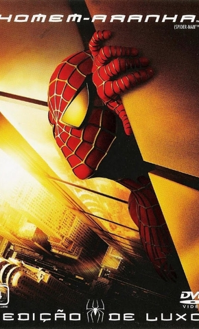
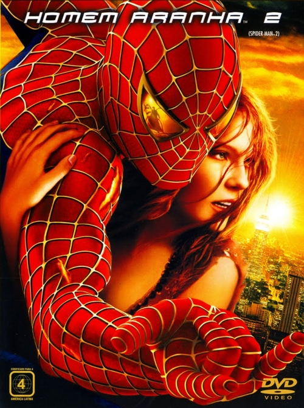

Homem Aranha 1
Algo muito incrivel acontece com Peter Paker, logo após receber uma picada de aranha radioativa Peter recebe poderes que o permitem escolher entre ser uma pessoa ruim que pensa somente nela mesma ou ajudar os habitantes de Nova Iorque.
Homem Aranha 2
Nesta sequencia nosso protagonista Peter Paker enfrentará um dos seus piores inimigo, o Dr.Octopus. Nesta aventura, Peter tenta equilibrar sua vida pessoal e conquistar sua paixão de infância, Marie Jane enquanto salva a cidade de Nova Iorque novamente.